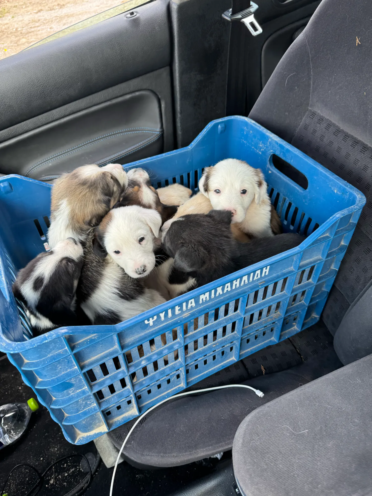
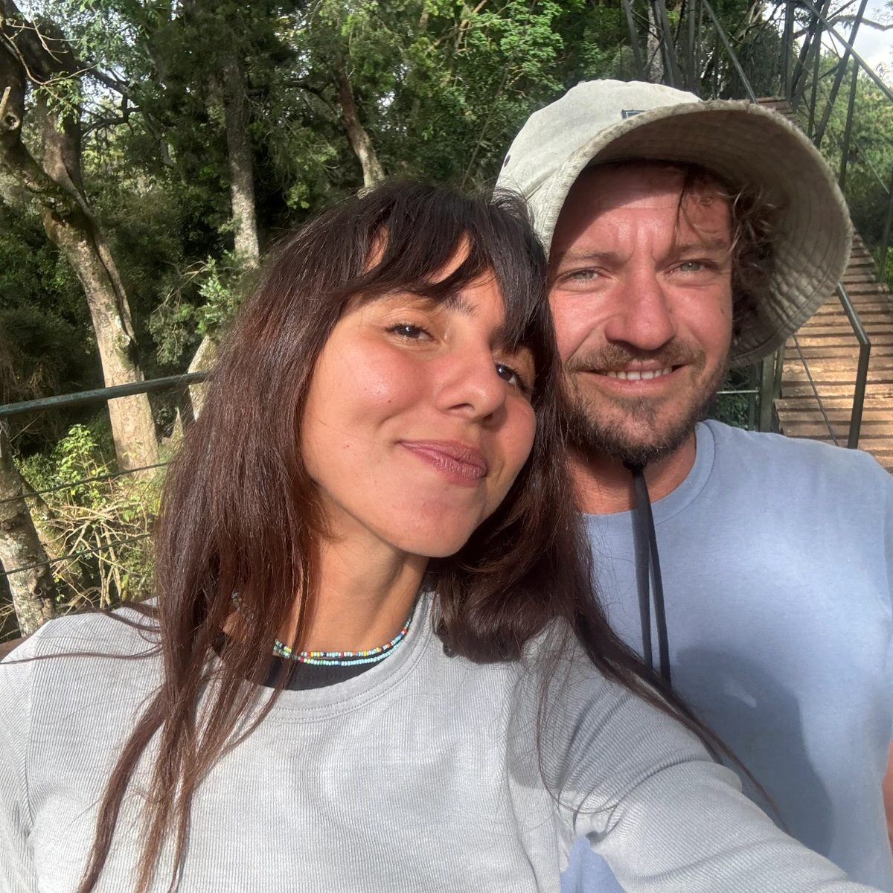

<!DOCTYPE html>
<html lang="en">
<head>
  <meta charset="UTF-8">
  <meta name="viewport" content="width=device-width, initial-scale=1.0">
  <title>Small Animal Rescuers — Adopt a Puppy</title>
  <link href="https://fonts.googleapis.com/css2?family=Poppins:wght@400;700;800&family=Amatic+SC:wght@400;700&family=Inter:wght@400;600;700;800&family=Playpen+Sans:wght@400;700;800&subset=greek&display=swap" rel="stylesheet">
  <style>
    @font-face {
      font-family: 'Playpen Sans';
      src: url('assets/PlaypenSans-VariableFont_wght.ttf') format('truetype');
      font-weight: 100 900;
      font-style: normal;
    }
    :root {
      --font-body:    'Poppins';
      --font-heading: 'Amatic SC';
    }
    body[data-lang="el"] {
      --font-body:    'Inter';
      --font-heading: 'Playpen Sans';
    }
    body[data-lang="el"] h1,
    body[data-lang="el"] h2,
    body[data-lang="el"] h3 { font-weight: 400 !important; }
    h1, h2, h3 { font-family: var(--font-heading), cursive !important; letter-spacing: 0.02em; }
    h1 { font-weight: 700 !important; }
    h2 { font-weight: 700 !important; font-size: clamp(42px, 6vw, 72px) !important; }
    h3 { font-weight: 700 !important; font-size: clamp(28px, 4vw, 40px) !important; }
    body[data-lang="el"] h2 { font-size: clamp(34px, 4.8vw, 56px) !important; }
    body[data-lang="el"] h3 { font-size: clamp(22px, 3vw, 30px) !important; }
    body[data-lang="el"] h3.step-title { font-size: clamp(18px, 1.9vw, 22px) !important; }
  </style>
  <script src="https://unpkg.com/react@18.3.1/umd/react.development.js" crossorigin="anonymous"></script>
  <script src="https://unpkg.com/react-dom@18.3.1/umd/react-dom.development.js" crossorigin="anonymous"></script>
  <script src="https://unpkg.com/@babel/standalone@7.29.0/babel.min.js" crossorigin="anonymous"></script>
  <style>
    *, *::before, *::after { box-sizing: border-box; margin: 0; padding: 0; }
    html { scroll-behavior: smooth; }
    body { font-family: var(--font-body), sans-serif; background: #6C2C25; padding-bottom: clamp(56px, 7vw, 86px); }
    #root { min-height: 100vh; }
    ::-webkit-scrollbar { width: 6px; }
    ::-webkit-scrollbar-track { background: #6C2C25; }
    ::-webkit-scrollbar-thumb { background: #EB5E3A; border-radius: 3px; }
    * { -webkit-font-smoothing: antialiased; }
    @media (max-width: 640px) {
      .hero-section { min-height: auto !important; padding: 150px 20px 36px !important; border: 0 !important; }
      .hero-section { position: relative; z-index: 0; }
      .story-section { padding-top: 24px !important; border: 0 !important; box-shadow: none !important; margin-top: -2px !important; position: relative; z-index: 1; }
      .story-img { width: 100% !important; aspect-ratio: 4 / 5 !important; }
      .about-img { width: 100% !important; }
      .about-section { padding-top: 48px !important; }
      .site-footer { padding: 20px !important; }
      .footer-logo { height: 40px !important; display: block; margin: 0 auto 6px !important; border-radius: 6px !important; }
      .footer-copy { margin: 0 !important; color: rgba(248,245,232,0.3) !important; }
    }
  </style>
</head>
<body>
  <div id="root"></div>

  <script type="text/babel">

// ─── Language context ─────────────────────────────────────────────────────────
const LangContext = React.createContext('en');

// ─── Translations ─────────────────────────────────────────────────────────────
const TR = {
  en: {
    adoptBtn:       "Adopt a puppy",
    location:       "📍 Pieria, Greece",
    heroHeadline:   "Greek puppies looking for a forever home",
    heroSub:        "They were found at just 15 days old. Nine months, a lot of vet visits and plenty of belly rubs later, they're ready to go home.",
    applyToAdopt:   "Apply to adopt",
    meetThem:       "Meet them",
    theirStory:     "Their story",
    storyP1:        "On 31 March 2026, we rescued a litter of eight puppies and their mum from a village in Pieria, Northern Greece. The puppies were 40 days old.",
    storyP2:        "Since then they've had their vet visits, their vaccinations and a home to grow up in. They've lived alongside four cats and spent time with children, so family life won't be new to them.",
    storyP3:        "Now they're 9 months old, vaccinated, microchipped and ready to travel to the EU or UK from 1 December. All they need is a family of their own.",
    meetPuppies:    "Meet the puppies",
    meetPuppiesSub: "All the dogs are very easygoing and none is aggressive. Each one is a whole personality — click to learn more and apply to adopt.",
    available:      "AVAILABLE",
    unavailable:    "UNAVAILABLE",
    unavailableMsg: n => `${n} is no longer available for adoption.`,
    meetArrow:      (n, g) => `Meet ${n} →`,
    howToAdopt:     "How to adopt",
    steps: [
      { n:"01", title:"Pick a puppy",      desc:"Read about each puppy and find the one who fits your life." },
      { n:"02", title:"Fill out the form", desc:"Tell us about your home and lifestyle. About 5–10 minutes." },
      { n:"03", title:"We'll be in touch", desc:"We review every application and reply within a few days." },
    ],
    startApp:       "Start the application",
    vetCosts:       "Adoption fee, home check and flight costs apply. After adoption, vet care is the adopter's responsibility.",
    vetCostsShort:  "Adoption fee, home check and flight costs apply. After adoption, vet care is the adopter's responsibility.",
    footerLocation: "Pieria, Greece",
    footerCopy:     "© 2026 Small Animal Rescuers. All puppies deserve a home.",
    backAll:        "← All puppies",
    months:         "~9 months",
    available2:     "AVAILABLE",
    unavailable2:   "UNAVAILABLE",
    applyFor:       n => `Apply to adopt ${n}`,
    alsoAvail:      "Also available",
    adoptName:      n => `Adopt ${n}`,
    appSent:        "Application sent!",
    appSentDesc:    n => `Almost there! Your answers have been carried over to our application form — just add your email and hit submit to complete your application for ${n}.`,
    tabNote:        "The form should have opened in a new tab. If not,",
    clickHere:      "click here",
    backToAll:      "← Back to all puppies",
    stepOf:         (s,t) => `STEP ${s} OF ${t}`,
    aboutYou:       "About you",
    homeLife:       "Your home & lifestyle",
    commitment:     "Commitment & care",
    genderLabel:    g => g,
    // Form labels
    fName:          "Full name *",
    fPhone:         "Phone number *",
    fRegion:        "What area / region do you live in? *",
    fReason:        n => `Why do you want to adopt ${n}? *`,
    fLiving:        "Current living situation *",
    fLivingOpts:    ["Own home with garden","Renting with garden","Apartment","Other"],
    fLandlord:      "Do you have your landlord's permission to keep a dog? *",
    fLandlordOpts:  ["Yes","No","N/A – I own my home"],
    fHours:         "Hours the puppy will be alone per day *",
    fHoursOpts:     ["0–2 hours","2–4 hours","4–6 hours","More than 6 hours"],
    fChildren:      "Do you have children at home? If yes, what are their ages? *",
    fChildrenPh:    "e.g. No / Yes — ages 4 and 8",
    fPrevDog:       "Do you currently have or have you previously owned a dog? *",
    fPrevDogOpts:   ["Yes, currently","Yes, previously","No, never"],
    fPrevDogDetail: "What happened to your previous dog? *",
    fOtherPets:     "Other pets at home? *",
    fOtherPetsPh:   "e.g. 1 cat, 2 older dogs, or none",
    fCaregiver:     "Who will be the primary caregiver? *",
    fCaregiverPh:   "Your name or relationship to the household",
    fHousehold:     "Are all adults in the household in agreement? *",
    fHouseholdPh:   "Describe who's involved in the decision",
    fRoutine:       "Describe your typical weekly routine *",
    fRoutinePh:     "Work hours, exercise habits, typical day…",
    fEmergency:     "Emergency support network *",
    fEmergencyOpts: ["Yes — I have a trusted person / vet / dog sitter","No — not yet","Working on it"],
    btnBack:        s => s > 1 ? "← Back" : "← Cancel",
    btnContinue:    "Continue →",
    btnFinalise:    "Finalise application →",
    healthLabel:    "Health",
    neuteredLabel:  "Neutered",
    aboutUsHeading: "About us",
    aboutUsP1:      "We're Small Animal Rescuers, a small group of independent rescuers in Greece. We've helped animals across Europe, Africa and Asia — from puppies to baby bats. Because we travel a lot, we help wherever we can: from getting an animal to the vet and covering the bills, to giving them a place to stay.",
    aboutUsP2:      "We're not a big organisation. Every puppy you see here has been fed, treated and cuddled by one of us, and we know each of them by name and by habit. That's why we're careful about who adopts, and why we stay in touch once they've gone home.",
  },
  el: {
    adoptBtn:       "Υιοθέτησε",
    location:       "📍 Πιερία, Ελλάδα",
    heroHeadline:   "Κουτάβια από την Ελλάδα\nψάχνουν μόνιμο σπίτι",
    heroSub:        "Τα βρήκαμε 15 ημερών και τα μεγαλώσαμε σαν δικά μας. Μετά από εννιά μήνες φροντίδας και παιχνιδιού, τώρα ψάχνουμε ανθρώπους που θα τα αγαπήσουν το ίδιο.",
    applyToAdopt:   "Θέλω να υιοθετήσω",
    meetThem:       "Γνώρισέ τα",
    theirStory:     "Η ιστορία τους",
    storyP1:        "Στις 31 Μαρτίου 2026 σώσαμε οκτώ μικρές μπουκίτσες μαζί με τη μαμά τους από ένα χωριό της Πιερίας. Ήταν μόλις 40 ημερών.",
    storyP2:        "Από εκείνη τη μέρα τα φροντίζουμε εμείς: κτηνίατρος, εμβόλια, φαγητό και ένα σπίτι να μεγαλώσουν. Έχουν μεγαλώσει με τις τέσσερις γατούλες μας και έχουν παίξει με παιδιά, οπότε η ζωή σε οικογένεια δεν τους είναι κάτι άγνωστο.",
    storyP3:        "Σήμερα είναι 9 μηνών, εμβολιασμένα, με μικροτσιπάκια και έτοιμα να ταξιδέψουν σε χώρες της Ευρώπης ή στο Ηνωμένο Βασίλειο από την 1η Δεκεμβρίου. Το μόνο που τους λείπει είναι μια δική τους οικογένεια.",
    meetPuppies:    "Γνώρισε τα κουτάβια",
    meetPuppiesSub: "Όλα τα σκυλάκια έχουν εξαιρετική συμπεριφορά προς ανθρώπους και γάτες και κανένα τους δεν είναι επιθετικό. Μάθε περισσότερα για τις προσωπικότητές τους και ξεκίνα την αίτηση υιοθεσίας σου.",
    available:      "ΔΙΑΘΕΣΙΜΟ",
    unavailable:    "ΜΗ ΔΙΑΘΕΣΙΜΟ",
    unavailableMsg: n => `Ο/Η ${n} δεν είναι πλέον διαθέσιμος/η για υιοθεσία.`,
    meetArrow:      (n, g) => `Γνώρισέ ${g==="Female"?"την":"τον"} ${n} →`,
    howToAdopt:     "Πώς να υιοθετήσεις",
    steps: [
      { n:"01", title:"Διάλεξε κουτάβι",          desc:"Διάβασε για το καθένα και βρες αυτό που ταιριάζει στη ζωή σου." },
      { n:"02", title:"Συμπλήρωσε τη φόρμα",       desc:"Πες μας για το σπίτι και την καθημερινότητά σου. Θα σου πάρει 5 με 10 λεπτά." },
      { n:"03", title:"Θα επικοινωνήσουμε μαζί σου", desc:"Διαβάζουμε κάθε αίτηση και απαντάμε μέσα σε λίγες μέρες." },
    ],
    startApp:       "Ξεκίνα την αίτηση",
    vetCosts:       "Η υιοθεσία έχει κόστος, γίνεται έλεγχος σπιτιού και υπάρχουν έξοδα μεταφοράς, εάν το σκυλάκι πρέπει να ταξιδέψει στην τοποθεσία σου. Μετά την υιοθεσία, την κτηνιατρική φροντίδα την αναλαμβάνει η νέα οικογένεια.",
    vetCostsShort:  "Η υιοθεσία έχει κόστος, γίνεται έλεγχος σπιτιού και υπάρχουν έξοδα μεταφοράς, εάν το σκυλάκι πρέπει να ταξιδέψει στην τοποθεσία σου. Μετά την υιοθεσία, την κτηνιατρική φροντίδα την αναλαμβάνει η νέα οικογένεια.",
    footerLocation: "Πιερία, Ελλάδα",
    footerCopy:     "© 2026 Small Animal Rescuers. Όλα τα κουτάβια αξίζουν ένα σπίτι.",
    backAll:        "← Όλα τα κουτάβια",
    months:         "~9 μηνών",
    available2:     "ΔΙΑΘΕΣΙΜΟ",
    unavailable2:   "ΜΗ ΔΙΑΘΕΣΙΜΟ",
    applyFor:       (n, g) => `Αίτηση υιοθεσίας για ${g==="Female"?"την":"τον"} ${n}`,
    alsoAvail:      "Επίσης διαθέσιμα",
    adoptName:      n => `Υιοθέτησε τον/την ${n}`,
    appSent:        "Η αίτηση στάλθηκε!",
    appSentDesc:    n => `Σχεδόν έτοιμο! Οι απαντήσεις σου μεταφέρθηκαν στη φόρμα — πρόσθεσε το email σου και υποβάλε για να ολοκληρώσεις την αίτηση για τον/την ${n}.`,
    tabNote:        "Η φόρμα πρέπει να άνοιξε σε νέα καρτέλα. Αν όχι,",
    clickHere:      "κλικ εδώ",
    backToAll:      "← Πίσω σε όλα τα κουτάβια",
    stepOf:         (s,t) => `ΒΗΜΑ ${s} ΑΠΟ ${t}`,
    aboutYou:       "Για εσένα",
    homeLife:       "Σπίτι & τρόπος ζωής",
    commitment:     "Δέσμευση & φροντίδα",
    genderLabel:    g => g === 'Male' ? 'Αρσενικό' : 'Θηλυκό',
    // Form labels
    fName:          "Ονοματεπώνυμο *",
    fPhone:         "Τηλέφωνο *",
    fRegion:        "Σε ποια περιοχή / νομό μένεις; *",
    fReason:        n => `Γιατί θέλεις να υιοθετήσεις τον/την ${n}; *`,
    fLiving:        "Τρέχουσα κατοικία *",
    fLivingOpts:    ["Own home with garden","Renting with garden","Apartment","Other"],
    fLivingLabels:  ["Ιδιόκτητο σπίτι με κήπο","Ενοικιαζόμενο με κήπο","Διαμέρισμα","Άλλο"],
    fLandlord:      "Έχεις άδεια από τον ιδιοκτήτη για να κρατάς σκύλο; *",
    fLandlordOpts:  ["Yes","No","N/A – I own my home"],
    fLandlordLabels:["Ναι","Όχι","Δ/Α – Ιδιόκτητο"],
    fHours:         "Ώρες που το κουτάβι θα μένει μόνο ημερησίως *",
    fHoursOpts:     ["0–2 hours","2–4 hours","4–6 hours","More than 6 hours"],
    fHoursLabels:   ["0–2 ώρες","2–4 ώρες","4–6 ώρες","Πάνω από 6 ώρες"],
    fChildren:      "Έχεις παιδιά στο σπίτι; Αν ναι, ηλικίες; *",
    fChildrenPh:    "π.χ. Όχι / Ναι — ηλικίες 4 και 8",
    fPrevDog:       "Έχεις ή είχες ποτέ σκύλο; *",
    fPrevDogOpts:   ["Yes, currently","Yes, previously","No, never"],
    fPrevDogLabels: ["Ναι, αυτή τη στιγμή","Ναι, στο παρελθόν","Όχι, ποτέ"],
    fPrevDogDetail: "Τι έγινε ο προηγούμενος σκύλος σου; *",
    fOtherPets:     "Άλλα κατοικίδια στο σπίτι; *",
    fOtherPetsPh:   "π.χ. 1 γάτα, 2 μεγαλύτεροι σκύλοι, ή κανένα",
    fCaregiver:     "Ποιος θα είναι ο κύριος φροντιστής; *",
    fCaregiverPh:   "Το όνομά σου ή η σχέση σου με το νοικοκυριό",
    fHousehold:     "Συμφωνούν όλοι οι ενήλικες του νοικοκυριού; *",
    fHouseholdPh:   "Περίγραψε ποιοι εμπλέκονται στην απόφαση",
    fRoutine:       "Περίγραψε τη συνηθισμένη εβδομαδιαία ρουτίνα σου *",
    fRoutinePh:     "Ώρες εργασίας, συνήθειες άσκησης, τυπική μέρα…",
    fEmergency:     "Δίκτυο υποστήριξης έκτακτης ανάγκης *",
    fEmergencyOpts: ["Yes — I have a trusted person / vet / dog sitter","No — not yet","Working on it"],
    fEmergencyLabels:["Ναι — έχω έμπιστο άτομο / κτηνίατρο / pet sitter","Όχι — ακόμα","Το δουλεύω"],
    btnBack:        s => s > 1 ? "← Πίσω" : "← Άκυρο",
    btnContinue:    "Συνέχεια →",
    btnFinalise:    "Ολοκλήρωση αίτησης →",
    healthLabel:    "Υγεία",
    neuteredLabel:  "Στειρωμένο",
    aboutUsHeading: "Ποιοι είμαστε",
    aboutUsP1:      "Είμαστε οι Small Animal Rescuers, μια μικρή ομάδα ανεξάρτητων διασωστών στην Ελλάδα. Έχουμε βοηθήσει ζωάκια σε Ευρώπη, Αφρική και Ασία, από κουτάβια μέχρι και νυχτεριδάκια. Επειδή ταξιδεύουμε συχνά, βοηθάμε όπου μπορούμε: από τη μεταφορά στον κτηνίατρο και την κάλυψη των κτηνιατρικών εξόδων, μέχρι τη στέγη για το ζωάκι.",
    aboutUsP2:      "Δεν είμαστε μεγάλος οργανισμός. Κάθε κουτάβι που βλέπεις εδώ το έχει ταΐσει, φροντίσει και αγκαλιάσει κάποιος από εμάς, και τα ξέρουμε ένα ένα, με το όνομα και τα χούγια τους. Γι' αυτό προσέχουμε πού θα πάνε, και γι' αυτό μένουμε σε επαφή και μετά την υιοθεσία.",
  },
};

// Helper: get radio display label (Greek has separate label arrays, English value=label)
function radioLabel(T, field, value) {
  const optsKey = field + 'Opts';
  const labelsKey = field + 'Labels';
  if (T[labelsKey]) {
    const idx = T[optsKey].indexOf(value);
    return idx >= 0 ? T[labelsKey][idx] : value;
  }
  return value;
}

// ─── Colour palette ───────────────────────────────────────────────────────────
const C = {
  dark:     "#6C2C25",
  darkDeep: "#4A1E1A",
  blue:     "#7CA2E0",
  butter:   "#F2EDBD",
  tomato:   "#EB5E3A",
  cream:    "#F8F5E8",
  get brown()     { return this.dark; },
  get brownDark() { return this.darkDeep; },
  get terracotta(){ return this.tomato; },
  get lilac()     { return this.tomato; },
  get amber()     { return this.butter; },
  get pale()      { return this.butter; },
};

// ─── Puppy data ───────────────────────────────────────────────────────────────
const PUPPIES = [
  { id:"cinnamon", name:"Cinnamon", gender:"Female", photoPos:"center 50%",
    cover:"assets/cinnamon_cover.jpg",
    photos:["assets/cinnamon_01.jpg","assets/cinnamon_03.jpg","assets/cinnamon_04.jpg","assets/cinnamon_05.jpg"],
    video:"assets/cinnamon_new_video.mp4", videoPoster:"assets/cinnamon_new_poster.jpg",
    en:{ trait:"The cheeky", coat:"Shorthair, beige", health:"Vaccinated and microchipped", neutered:"Yes", personality:["Friendly","Confident","Playful"],
      description:"he's the smallest of her siblings but that doesn't stop her from being the center attention. She's friendly, confident and always up for fun.\n\nShe needs no time to warm up. She walks up to every person, dog and cat as if they've already met, and within minutes she's playing with you like you've known each other for years." },
    el:{ trait:"Η χαριτωμένη", coat:"Κοντό τρίχωμα, υπόξανθο", health:"Εμβολιασμένη, με μικροτσίπ", neutered:"Ναι", personality:["Κοινωνική","Θαρραλέα","Παιχνιδιάρα"],
      description:"Η Cinnamon είναι η πιο μικροκαμωμένη της παρέας, αλλά αυτό δεν την σταμάτησε ποτέ. Είναι φιλική, θαρραλέα και πάντα έτοιμη για παιχνίδι.\n\nΔεν της χρειάζεται χρόνος για να σε συμπαθήσει. Πλησιάζει κάθε άνθρωπο, σκύλο και γάτα σαν να γνωρίζονται από πριν, και σε λίγα λεπτά παίζει μαζί σου σαν να είστε φίλοι χρόνια." } },
  { id:"tupac", name:"Tupac", gender:"Male", photoPos:"center 55%",
    cover:"assets/tupac_cover.jpg",
    photos:["assets/tupac_01.jpg","assets/tupac_03.jpg","assets/tupac_04.jpg","assets/tupac_05.jpg"],
    video:"assets/tupac_new_video.mp4", videoPoster:"assets/tupac_new_poster.jpg",
    en:{ trait:"The charmer", coat:"Long hair, multicoloured", health:"Vaccinated and microchipped", neutered:"No", personality:["Cuddly","Funny","Playful"],
      description:"Tupac has never once managed to play it cool when someone arrives at the gate. He's warm, funny and happiest when he's getting cuddles, attention, or both. He also has a long, multicoloured coat that turns heads wherever he goes." },
    el:{ trait:"Ο γόης", coat:"Μακρύ τρίχωμα, πολύχρωμο", health:"Εμβολιασμένος, με μικροτσίπ", neutered:"Όχι", personality:["Χαδιάρης","Αστείος","Παιχνιδιάρης"],
      description:"Ο Tupac δεν έχει καταφέρει ποτέ να κρύψει τον ενθουσιασμό του όταν κάποιος έρχεται στην αυλόπορτα. Είναι τρυφερός, αστείος και πιο ευτυχισμένος από ποτέ όταν του δίνεις χάδια, προσοχή ή και τα δύο. Και με αυτό το μακρύ, πολύχρωμο τρίχωμα, δύσκολα περνάει απαρατήρητος." } },
  { id:"biggie", name:"Biggie", gender:"Male", photoPos:"center 35%", available:false, cover:"assets/nina_cover.jpg",
    photos:["assets/biggie01.jpg","assets/biggie02.jpg","assets/biggie03.jpg","assets/biggie04.jpg"],
    en:{ trait:"The fearless", coat:"Long hair, brown and white", personality:["Confident","Trainable","Smart"],
      description:"Biggie is the leader of the pack. Always in control of the situation and absolutely confident. Very trainable, he loves being close to people and tries to stay near the house, but he is also smart enough to climb to where the food is, or even climb the fence." },
    el:{ trait:"Ο ατρόμητος", coat:"Μακρύ τρίχωμα, καφέ και άσπρο", personality:["Σίγουρος","Εκπαιδεύσιμος","Έξυπνος"],
      description:"Ο Biggie είναι ο αρχηγός της αγέλης. Πάντα με τον έλεγχο της κατάστασης και απόλυτα σίγουρος. Πολύ εκπαιδεύσιμος, λατρεύει να είναι κοντά στους ανθρώπους και προσπαθεί να μένει κοντά στο σπίτι, αλλά είναι και αρκετά έξυπνος ώστε να σκαρφαλώσει εκεί που είναι το φαγητό ή ακόμα και να περάσει τον φράχτη." } },
  { id:"kanelos", name:"Kanelos", gender:"Male", photoPos:"center 45%",
    photos:["assets/kanelos_01.jpg","assets/kanelos_02.jpg","assets/kanelos_04.jpg","assets/kanelos_05.jpg"],
    video:"assets/kanelos_new_video.mp4", videoPoster:"assets/kanelos_new_poster.jpg",
    en:{ trait:"The sensitive", coat:"Shorthair, beige", health:"Vaccinated and microchipped", neutered:"No", personality:["Gentle","Cuddly","Affectionate"],
      description:"Kanelos's favourite place is on top of you. Sit down anywhere and he'll climb into your lap and fall asleep there. He's gentle and a little shy, and around louder dogs he tends to hang back. Give him a calm home and some patience, and he opens up quickly." },
    el:{ trait:"Ο χαδιάρης", coat:"Κοντό τρίχωμα, υπόξανθο", health:"Εμβολιασμένος, με μικροτσίπ", neutered:"Όχι", personality:["Ήρεμος","Χαδιάρης","Τρυφερός"],
      description:"Το αγαπημένο μέρος χαλάρωσης για τον Κανελάκο είναι πάνω σου. Κάτσε οπουδήποτε και θα ανέβει στην αγκαλιά σου και θα αποκοιμηθεί εκεί. Είναι γλυκός και λίγο ντροπαλός, και δίπλα σε πιο ζωηρά σκυλιά συνήθως μένει πίσω. Αν του δείξεις αγάπη, θα την πάρεις πίσω τριπλά." } },
  { id:"nina", name:"Nina", gender:"Female", photoPos:"center top", available:false, cover:"assets/biggie_cover.jpg",
    photos:["assets/nina01.jpg","assets/nina02.jpg","assets/nina03.jpg","assets/nina04.jpg"],
    en:{ trait:"The old soul", coat:"Shorthair", personality:["Observant","Playful","Responsive"],
      description:"Nina has a deep soul and is always looking to make eye contact with you. She reads and observes you a lot. Very playful, and quite rough at it with the other dogs, but very chilled and lovely when inside. Very responsive, and already listens very well.\n\nNina was quite sick and we had to take care of her inside the house for about a month. Now she is super strong again." },
    el:{ trait:"Η σοφή", coat:"Κοντό τρίχωμα", personality:["Παρατηρητική","Παιχνιδιάρα","Ανταποκρίνεται"],
      description:"Η Nina έχει βαθιά ψυχή και ψάχνει πάντα οπτική επαφή μαζί σου. Σε διαβάζει και σε παρατηρεί πολύ. Πολύ παιχνιδιάρα, και αρκετά άγρια στο παιχνίδι με τα άλλα σκυλάκια, αλλά πολύ ήρεμη και γλυκιά μέσα στο σπίτι. Ανταποκρίνεται πολύ και ήδη ακούει πολύ καλά.\n\nΗ Nina ήταν αρκετά άρρωστη και χρειάστηκε να τη φροντίσουμε μέσα στο σπίτι για περίπου ένα μήνα. Τώρα είναι ξανά super δυνατή." } },
  { id:"grizzly", name:"Grizzly", gender:"Female", photoPos:"center 40%",
    photos:["assets/grizzly_01.jpg","assets/grizzly_04.jpg","assets/grizzly_05.jpg","assets/grizzly_06.jpg"],
    video:"assets/grizzly_new_video.mp4", videoPoster:"assets/grizzly_new_poster.jpg",
    en:{ trait:"The leader", coat:"Shorthair, black", health:"Vaccinated and microchipped", neutered:"Yes", personality:["Energetic","Smart","Playful"],
      description:"Grizzly picks things up fast. Teach her a new command in the morning and she'll usually know it by the afternoon. Outside, she's all energy and wants to do everything at once. Inside, she's calm, well-mannered and happy to settle." },
    el:{ trait:"Η αρχηγός", coat:"Κοντό τρίχωμα, μαύρο", health:"Εμβολιασμένη, με μικροτσίπ", neutered:"Ναι", personality:["Ενεργητική","Έξυπνη","Παιχνιδιάρα"],
      description:"Η Grizzly είναι γεννημένη αρχηγός. Είναι πολύ έξυπνη, παιχνιδιάρα, γεμάτη ενέργεια και μαθαίνει εντολές μέσα σε λίγες ώρες.\n\nΈξω μπορεί να τρέχει παντού, μέσα στο σπίτι όμως είναι πολύ φρόνιμη και ήρεμη. Συνήθως είναι η αρχηγός ανάμεσα στα αδέλφια της και δεν θα δεις ποτέ κανέναν να πλησιάζει το φαγητό της. Παρ' όλα αυτά λατρεύει τις αγκαλιές και τα χάδια, και παίζει με πολλή τρυφερότητα τόσο με τα παιδιά όσο και με τις γάτες." } },
  { id:"lucky", name:"Lucky", gender:"Male", photoPos:"center top", available:false,
    photos:["assets/lucky01.jpg","assets/lucky02.jpg","assets/lucky03.jpg","assets/lucky04.jpg"],
    en:{ trait:"The curious", coat:"Shorthair, black and white", personality:["Playful","Curious","Shy"],
      description:"Lucky is a playful and curious dog. He loves playing with his siblings and at the same time feels comfortable being by himself. He has a very gentle soul and doesn't like loud sounds or fast movements. He is still working on his confidence with humans, but once he trusts you he will welcome you into his world. He can be very shy." },
    el:{ trait:"Ο περίεργος", coat:"Κοντό τρίχωμα, μαύρο και άσπρο", personality:["Παιχνιδιάρης","Περίεργος","Ντροπαλός"],
      description:"Ο Lucky είναι ένα παιχνιδιάρικο και περίεργο σκυλάκι. Λατρεύει να παίζει με τα αδέλφια του και ταυτόχρονα νιώθει άνετα και μόνος του. Έχει πολύ τρυφερή ψυχή και δεν του αρέσουν οι δυνατοί ήχοι και οι γρήγορες κινήσεις. Εξακολουθεί να χτίζει την αυτοπεποίθησή του με τους ανθρώπους, αλλά μόλις σε εμπιστευτεί θα σε καλωσορίσει στον κόσμο του. Μπορεί να είναι πολύ ντροπαλός." } },
  { id:"rocky", name:"Rocky", gender:"Male", photoPos:"center 38%", available:false,
    photos:["assets/rocky01.jpg","assets/rocky02.jpg","assets/rocky03.jpg","assets/rocky04.jpg"],
    en:{ trait:"The kind", coat:"", personality:["Gentle","Sweet","Easygoing"],
      description:"Very gentle and super sweet. He doesn't like rough play and always looks deep into your eyes. A very easygoing little friend." },
    el:{ trait:"Ο τρυφερός", coat:"", personality:["Τρυφερός","Γλυκός","Χαλαρός"],
      description:"Πολύ τρυφερός και super γλυκός. Δεν του αρέσει το άγριο παιχνίδι και σε κοιτάζει πάντα βαθιά στα μάτια. Ένας πολύ χαλαρός μικρός φίλος." } },
];

// ─── Google Form ──────────────────────────────────────────────────────────────
const FORM_BASE_URL = "https://docs.google.com/forms/d/e/1FAIpQLSdQ-VBItr5c1PYvFnC2STyTfu93sS0kx4Dx9Xh_E0pqIZ2yNQ/viewform";
const ENTRY = {
  puppyName:"entry.1057643753", name:"entry.704764318", phone:"entry.846343295",
  region:"entry.1587452767", reason:"entry.1448387008", living:"entry.1279046190",
  landlord:"entry.420455444", hoursAlone:"entry.688681295", children:"entry.574798700",
  prevDog:"entry.1152938152", prevDogDetail:"entry.2071001326", otherPets:"entry.474608576",
  caregiver:"entry.439337561", householdAgree:"entry.968370332", routine:"entry.389370326",
  emergency:"entry.1763440681",
};
function buildPreFillUrl(form, puppy) {
  const p = new URLSearchParams();
  p.set(ENTRY.puppyName, puppy.name);
  Object.entries(ENTRY).forEach(([k, id]) => {
    if (k === "puppyName") return;
    if (form[k] && form[k].trim()) p.set(id, form[k]);
  });
  return `${FORM_BASE_URL}?usp=pp_url&${p.toString()}`;
}

// ─── Language toggle ──────────────────────────────────────────────────────────
function LangToggle({ lang, setLang }) {
  const btn = (code, label) => (
    <button onClick={() => setLang(code)} style={{
      background: lang === code ? C.cream : 'transparent',
      color: lang === code ? C.brown : 'rgba(248,245,232,0.55)',
      border: `1.5px solid ${lang === code ? C.cream : 'rgba(248,245,232,0.3)'}`,
      borderRadius: 50, padding: '4px 12px', fontSize: 12, fontWeight: 700,
      cursor: 'pointer', fontFamily: "'Poppins',sans-serif",
      transition: 'all 0.2s', letterSpacing: '0.04em',
    }}>
      {label}
    </button>
  );
  return (
    <div style={{ display:'flex', gap:6, alignItems:'center' }}>
      {btn('en', 'EN')}
      {btn('el', 'ΕΛ')}
    </div>
  );
}

// ─── Running dog ──────────────────────────────────────────────────────────────
function FixedDog() {
  const dogRef  = React.useRef(null);
  const timerRef = React.useRef(null);
  React.useEffect(() => {
    const onScroll = () => {
      const dog = dogRef.current;
      if (!dog) return;
      const progress = window.scrollY / Math.max(1, document.documentElement.scrollHeight - window.innerHeight);
      dog.style.left = (2 + progress * 88) + '%';
      dog.style.animationPlayState = 'running';
      clearTimeout(timerRef.current);
      timerRef.current = setTimeout(() => {
        if (dogRef.current) dogRef.current.style.animationPlayState = 'paused';
      }, 150);
    };
    window.addEventListener('scroll', onScroll, { passive: true });
    onScroll();
    return () => window.removeEventListener('scroll', onScroll);
  }, []);
  return (
    <>
      <style>{`
        @keyframes dogRun {
          0%   { transform: scaleX(1) translateY(0px); }
          25%  { transform: scaleX(1) translateY(-4px); }
          50%  { transform: scaleX(1) translateY(0px); }
          75%  { transform: scaleX(1) translateY(-2px); }
          100% { transform: scaleX(1) translateY(0px); }
        }
      `}</style>
      <div style={{
        position:'fixed', bottom:0, left:0, right:0,
        height:'clamp(56px,7vw,86px)', background:'#DBE9F7',
        zIndex:98, pointerEvents:'none', boxShadow:'0 -2px 12px rgba(0,0,0,0.07)',
      }}/>
      
    </>
  );
}

// ─── Nav ──────────────────────────────────────────────────────────────────────
function Nav({ onHome, lang, setLang, isHome }) {
  const T = TR[lang];
  const [scrolled, setScrolled] = React.useState(false);
  React.useEffect(() => {
    const fn = () => setScrolled(window.scrollY > 40);
    window.addEventListener('scroll', fn);
    return () => window.removeEventListener('scroll', fn);
  }, []);
  return (
    <nav style={{
      position:'fixed', top:0, left:0, right:0, zIndex:200,
      background: scrolled ? 'rgba(108,44,37,0.96)' : C.brown,
      backdropFilter:'blur(12px)',
      borderBottom: scrolled ? '1px solid rgba(108,44,37,0.15)' : 'none',
      transition:'all 0.3s', padding:'0 clamp(20px,4vw,56px)',
      display:'flex', alignItems:'center', justifyContent:'space-between',
      height:82,
    }}>
      <div style={{ display:'flex', alignItems:'center', gap:16 }}>
        <button onClick={onHome} style={{background:'none',border:'none',cursor:'pointer',padding:0,display:'flex',alignItems:'center'}}>
          
        </button>
        <LangToggle lang={lang} setLang={setLang}/>
      </div>
      {isHome && (
        <a href="#puppies" style={{
          background:C.terracotta, color:C.cream, padding:'10px 26px', borderRadius:50,
          fontFamily:"var(--font-body),sans-serif", fontWeight:700, fontSize:14,
          textDecoration:'none', transition:'transform 0.2s,box-shadow 0.2s', display:'inline-block',
        }}
          onMouseEnter={e=>{e.currentTarget.style.transform='scale(1.05)';e.currentTarget.style.boxShadow='0 6px 20px rgba(235,94,58,0.4)';}}
          onMouseLeave={e=>{e.currentTarget.style.transform='scale(1)';e.currentTarget.style.boxShadow='none';}}
        >{T.adoptBtn}</a>
      )}
    </nav>
  );
}

// ─── Hero ─────────────────────────────────────────────────────────────────────
function Hero({ onAdopt }) {
  const lang = React.useContext(LangContext);
  const T = TR[lang];
  return (
    <section className="hero-section" style={{
      background:C.pale, minHeight:'100vh',
      display:'flex', flexDirection:'column', alignItems:'center', justifyContent:'center',
      padding:'120px clamp(20px,5vw,80px) 80px', textAlign:'center', position:'relative', overflow:'hidden',
    }}>
      <div style={{position:'relative', zIndex:1, maxWidth: lang==='el' ? 960 : 700}}>
        <h1 style={{
          fontSize: lang==='el' ? 'clamp(38px,5.5vw,64px)' : 'clamp(48px,8vw,92px)', fontWeight:800, lineHeight:1.06,
          color:C.dark, marginBottom:24, whiteSpace:'pre-line',
        }}>{T.heroHeadline}</h1>
        <p style={{
          color:'rgba(108,44,37,0.7)', fontSize:'clamp(15px,2vw,19px)',
          lineHeight:1.75, maxWidth:520, margin:'0 auto 44px',
        }}>{T.heroSub}</p>
        <div style={{display:'flex', gap:16, justifyContent:'center', flexWrap:'wrap'}}>
          <a href="#puppies" onClick={onAdopt} style={{
            background:C.terracotta, color:C.cream, padding:'16px 44px', borderRadius:50,
            fontSize:16, fontWeight:700, cursor:'pointer', textDecoration:'none',
            transition:'all 0.25s', display:'inline-block',
          }}
            onMouseEnter={e=>{e.currentTarget.style.transform='translateY(-3px)';e.currentTarget.style.boxShadow='0 10px 28px rgba(235,94,58,0.4)';}}
            onMouseLeave={e=>{e.currentTarget.style.transform='translateY(0)';e.currentTarget.style.boxShadow='none';}}
          >{T.applyToAdopt}</a>
          <a href="#puppies" style={{
            background:'transparent', color:C.brown, border:`2px solid ${C.brown}`,
            padding:'14px 44px', borderRadius:50, fontSize:16, fontWeight:700,
            textDecoration:'none', transition:'all 0.2s', display:'inline-block',
          }}
            onMouseEnter={e=>e.currentTarget.style.background='rgba(108,44,37,0.1)'}
            onMouseLeave={e=>e.currentTarget.style.background='transparent'}
          >{T.meetThem}</a>
        </div>
      </div>
    </section>
  );
}

// ─── Story ────────────────────────────────────────────────────────────────────
function Story() {
  const T = TR[React.useContext(LangContext)];
  return (
    <section className="story-section" style={{background:C.butter, padding:'72px clamp(20px,5vw,80px)'}}>
      <div style={{maxWidth:920, margin:'0 auto', display:'flex', gap:48, alignItems:'center', flexWrap:'wrap'}}>
        
        <div style={{flex:1, minWidth:260}}>
          <h2 style={{fontSize:'clamp(26px,4vw,36px)', fontWeight:800, color:C.brown, marginBottom:18, lineHeight:1.2}}>{T.theirStory}</h2>
          <p style={{fontSize:17, lineHeight:1.85, color:'rgba(108,44,37,0.78)', marginBottom:14}}>{T.storyP1}</p>
          <p style={{fontSize:17, lineHeight:1.85, color:'rgba(108,44,37,0.78)', marginBottom:14}}>{T.storyP2}</p>
          <p style={{fontSize:17, lineHeight:1.85, color:'rgba(108,44,37,0.78)'}}>{T.storyP3}</p>
        </div>
      </div>
    </section>
  );
}

// ─── Puppy card ───────────────────────────────────────────────────────────────
function PuppyCard({ puppy, onClick, showBadge = true, cornerRadius = 22 }) {
  const lang = React.useContext(LangContext);
  const T = TR[lang];
  const pd = puppy[lang] || puppy.en;
  const [hov, setHov] = React.useState(false);
  return (
    <div onClick={puppy.available===false ? undefined : onClick}
      onMouseEnter={()=>setHov(true)} onMouseLeave={()=>setHov(false)}
      style={{
        background:C.amber, borderRadius:cornerRadius, overflow:'hidden',
        cursor: puppy.available===false ? 'default' : 'pointer',
        transform: hov && puppy.available!==false ? 'translateY(-8px) scale(1.02)' : 'translateY(0) scale(1)',
        boxShadow: hov && puppy.available!==false ? '0 24px 52px rgba(108,44,37,0.24)' : '0 4px 14px rgba(108,44,37,0.1)',
        transition:'all 0.3s cubic-bezier(0.34,1.56,0.64,1)',
      }}>
      <div style={{height:200, overflow:'hidden', position:'relative'}}>
        {!puppy.noPhoto && }
        {showBadge && (
          <span style={{
            position:'absolute', top:12, right:12,
            background:C.brown, color:C.amber,
            fontSize:10, fontWeight:700, padding:'4px 11px', borderRadius:50, letterSpacing:'0.06em',
          }}>{puppy.available===false ? T.unavailable : T.available}</span>
        )}
        <span style={{
          position:'absolute', bottom:12, left:12,
          background:'rgba(255,255,255,0.32)', color:C.brown,
          fontSize:11, fontWeight:600, padding:'3px 11px', borderRadius:50,
          backdropFilter:'blur(6px)',
        }}>{T.genderLabel(puppy.gender)}</span>
      </div>
      <div style={{padding:'20px 20px 24px'}}>
        <h3 style={{fontSize:22, fontWeight:800, color:C.brown, marginBottom:4}}>{puppy.name}</h3>
        <p style={{fontSize:13, color:'rgba(108,44,37,0.6)', marginBottom:16, fontStyle:'italic'}}>{pd.trait}</p>
        <div style={{display:'flex', gap:6, flexWrap:'wrap', marginBottom:16}}>
          {pd.personality.map(t => (
            <span key={t} style={{background:'rgba(108,44,37,0.1)',color:C.brown,fontSize:11,fontWeight:600,padding:'4px 10px',borderRadius:50}}>{t}</span>
          ))}
        </div>
        <div style={{color:C.brown,fontWeight:700,fontSize:14,opacity:hov?1:0.55,transition:'opacity 0.2s'}}>
          {T.meetArrow(puppy.name, puppy.gender)}
        </div>
      </div>
    </div>
  );
}

// ─── Puppies grid ─────────────────────────────────────────────────────────────
function PuppiesGrid({ onSelectPuppy }) {
  const T = TR[React.useContext(LangContext)];
  return (
    <section id="puppies" style={{background:C.blue, padding:'80px clamp(20px,5vw,60px)', position:'relative', overflow:'hidden'}}>
      <div style={{maxWidth:1120, margin:'0 auto'}}>
        <h2 style={{fontSize:'clamp(30px,5vw,52px)',fontWeight:800,color:C.butter,marginBottom:12,textAlign:'center'}}>
          {T.meetPuppies}
        </h2>
        <p style={{textAlign:'center',color:'rgba(242,237,189,0.85)',fontSize:17,marginBottom:56}}>
          {T.meetPuppiesSub}
        </p>
        <div style={{display:'grid',gridTemplateColumns:'repeat(auto-fill,minmax(240px,1fr))',gap:28}}>
          {[...PUPPIES].sort((a,b)=>(a.available===false?1:0)-(b.available===false?1:0)).map(p => (
            <PuppyCard key={p.id} puppy={p} onClick={()=>onSelectPuppy(p)}/>
          ))}
        </div>
      </div>
    </section>
  );
}

// ─── How to adopt ─────────────────────────────────────────────────────────────
function HowToAdopt({ onStart }) {
  const T = TR[React.useContext(LangContext)];
  return (
    <section style={{background:C.butter, padding:'80px clamp(20px,5vw,80px)'}}>
      <div style={{maxWidth:960, margin:'0 auto'}}>
        <h2 style={{fontSize:'clamp(26px,4vw,44px)',fontWeight:800,color:C.lilac,marginBottom:56,textAlign:'center'}}>
          {T.howToAdopt}
        </h2>
        <div style={{display:'grid',gridTemplateColumns:'repeat(auto-fit,minmax(180px,1fr))',columnGap:40,rowGap:0,marginBottom:60}}>
          {T.steps.map(s => (
            <div key={s.n} style={{textAlign:'center',display:'grid',gridRow:'span 3',gridTemplateRows:'subgrid',alignContent:'start',marginBottom:40}}>
              <div style={{fontSize:52,fontWeight:800,color:'rgba(108,44,37,0.18)',lineHeight:1,marginBottom:18}}>{s.n}</div>
              <h3 className="step-title" style={{fontSize:22,fontWeight:700,color:C.brown,marginBottom:10}}>{s.title}</h3>
              <p style={{fontSize:15,color:'rgba(108,44,37,0.65)',lineHeight:1.75}}>{s.desc}</p>
            </div>
          ))}
        </div>
        <div style={{textAlign:'center'}}>
          <button onClick={onStart} style={{
            background:C.terracotta, color:C.cream, border:'none',
            padding:'16px 52px', borderRadius:50, fontSize:16, fontWeight:700,
            cursor:'pointer', transition:'all 0.2s', marginBottom:20,
            fontFamily:"var(--font-body),sans-serif",
          }}
            onMouseEnter={e=>{e.currentTarget.style.transform='translateY(-2px)';e.currentTarget.style.boxShadow='0 8px 24px rgba(235,94,58,0.35)';}}
            onMouseLeave={e=>{e.currentTarget.style.transform='translateY(0)';e.currentTarget.style.boxShadow='none';}}
          >{T.startApp}</button>
          <p style={{fontSize:12,color:'rgba(108,44,37,0.45)'}}>{T.vetCosts}</p>
        </div>
      </div>
    </section>
  );
}

// ─── About us ─────────────────────────────────────────────────────────────────
function AboutUs() {
  const T = TR[React.useContext(LangContext)];
  return (
    <section className="about-section" style={{background:C.cream, padding:'80px clamp(20px,5vw,80px)'}}>
      <div style={{maxWidth:920, margin:'0 auto', display:'flex', gap:48, alignItems:'stretch', flexWrap:'wrap'}}>
        
        <div style={{flex:1, minWidth:260}}>
          <h2 style={{fontSize:'clamp(26px,4vw,44px)',fontWeight:800,color:C.brown,marginBottom:32}}>
            {T.aboutUsHeading}
          </h2>
          <p style={{fontSize:17,lineHeight:1.85,color:'rgba(108,44,37,0.78)',marginBottom:20}}>{T.aboutUsP1}</p>
          <p style={{fontSize:17,lineHeight:1.85,color:'rgba(108,44,37,0.78)'}}>{T.aboutUsP2}</p>
        </div>
      </div>
    </section>
  );
}

// ─── Footer ───────────────────────────────────────────────────────────────────
function Footer() {
  const T = TR[React.useContext(LangContext)];
  return (
    <footer className="site-footer" style={{background:C.brownDark,padding:'56px 40px',textAlign:'center'}}>
      
<p className="footer-copy" style={{color:'rgba(248,245,232,0.18)',fontSize:12,marginTop:20}}>{T.footerCopy}</p>
    </footer>
  );
}

// ─── Lightbox ─────────────────────────────────────────────────────────────────
function Lightbox({ photos, index, onClose }) {
  const [current, setCurrent] = React.useState(index);
  React.useEffect(() => {
    const fn = e => {
      if (e.key==='Escape') onClose();
      if (e.key==='ArrowRight') setCurrent(c=>(c+1)%photos.length);
      if (e.key==='ArrowLeft')  setCurrent(c=>(c-1+photos.length)%photos.length);
    };
    window.addEventListener('keydown', fn);
    return () => window.removeEventListener('keydown', fn);
  }, [photos.length, onClose]);
  return (
    <div onClick={onClose} style={{
      position:'fixed',inset:0,background:'rgba(0,0,0,0.92)',zIndex:1000,
      display:'flex',alignItems:'center',justifyContent:'center',
    }}>
      <button onClick={e=>{e.stopPropagation();setCurrent(c=>(c-1+photos.length)%photos.length)}} style={{
        position:'absolute',left:24,background:'rgba(255,255,255,0.12)',border:'none',
        color:'#fff',fontSize:28,width:52,height:52,borderRadius:'50%',cursor:'pointer',
      }}>‹</button>
      e.stopPropagation()} style={{
        maxWidth:'90vw',maxHeight:'85vh',objectFit:'contain',borderRadius:12,
      }}/>
      <button onClick={e=>{e.stopPropagation();setCurrent(c=>(c+1)%photos.length)}} style={{
        position:'absolute',right:24,background:'rgba(255,255,255,0.12)',border:'none',
        color:'#fff',fontSize:28,width:52,height:52,borderRadius:'50%',cursor:'pointer',
      }}>›</button>
      <button onClick={onClose} style={{
        position:'absolute',top:20,right:20,background:'rgba(255,255,255,0.12)',border:'none',
        color:'#fff',fontSize:20,width:40,height:40,borderRadius:'50%',cursor:'pointer',
      }}>✕</button>
    </div>
  );
}

// ─── Puppy page ───────────────────────────────────────────────────────────────
function PuppyPage({ puppy, allPuppies, onBack, onSelectPuppy }) {
  const lang = React.useContext(LangContext);
  const T = TR[lang];
  const pd = puppy[lang] || puppy.en;
  const [lightbox, setLightbox] = React.useState(null);

  React.useEffect(() => { window.scrollTo({top:0,behavior:'instant'}); }, [puppy.id]);

  const applyUrl = `${FORM_BASE_URL}?usp=pp_url&${ENTRY.puppyName}=${encodeURIComponent(puppy.name)}`;

  return (
    <div style={{background:C.brown,minHeight:'100vh'}}>
      {lightbox !== null && (
        <Lightbox photos={puppy.photos} index={lightbox} onClose={()=>setLightbox(null)}/>
      )}
      <div style={{padding:'90px clamp(20px,5vw,60px) 0',maxWidth:1060,margin:'0 auto'}}>
        <button onClick={onBack} style={{
          background:'transparent',color:C.lilac,border:'1.5px solid rgba(235,94,58,0.35)',
          padding:'8px 22px',borderRadius:50,fontSize:14,fontWeight:600,cursor:'pointer',
          marginBottom:44,display:'inline-flex',alignItems:'center',gap:6,
          fontFamily:"var(--font-body),sans-serif",transition:'border-color 0.2s',
        }}
          onMouseEnter={e=>e.currentTarget.style.borderColor=C.lilac}
          onMouseLeave={e=>e.currentTarget.style.borderColor='rgba(235,94,58,0.35)'}
        >{T.backAll}</button>

        <div style={{display:'grid',gridTemplateColumns:'repeat(auto-fit,minmax(300px,1fr))',gap:56,alignItems:'start',marginBottom:72}}>
          <div>
            <div style={{background:'#4A1E1A',borderRadius:24,height:360,overflow:'hidden',marginBottom:14}}>
              setLightbox(0)}
                style={{width:'100%',height:'100%',objectFit:'cover',objectPosition:puppy.photoPos||'center top',borderRadius:24,cursor:'zoom-in'}}/>
            </div>
            <div style={{display:'grid',gridTemplateColumns:'1fr 1fr 1fr',gap:12}}>
              {puppy.photos.slice(1).map((_, i) => i + 1).map(n => (
                <div key={n} style={{background:'#4A1E1A',borderRadius:14,height:108,overflow:'hidden'}}>
                  setLightbox(n)}
                    style={{width:'100%',height:'100%',objectFit:'cover',cursor:'zoom-in'}}/>
                </div>
              ))}
            </div>
            {puppy.video && (
              <video src={puppy.video} poster={puppy.videoPoster} controls playsInline preload="metadata"
                style={{width:'100%',maxHeight:440,marginTop:12,borderRadius:14,background:'#4A1E1A',display:'block'}}/>
            )}
          </div>
          <div>
            <span style={{
              display:'inline-block',background:'rgba(235,94,58,0.14)',
              border:'1px solid rgba(235,94,58,0.28)',color:C.lilac,
              borderRadius:50,padding:'5px 16px',fontSize:12,fontWeight:600,
              letterSpacing:'0.07em',marginBottom:18,
            }}>{T.genderLabel(puppy.gender)} · {T.months} · {puppy.available===false ? T.unavailable2 : T.available2}</span>
            <h1 style={{fontSize:'clamp(44px,6vw,72px)',fontWeight:800,color:C.cream,lineHeight:1,marginBottom:8}}>
              {puppy.name}
            </h1>
            <p style={{fontSize:18,color:C.lilac,fontStyle:'italic',marginBottom:30}}>{pd.trait}</p>
            {pd.coat && <p style={{fontSize:14,fontWeight:600,color:C.butter,marginBottom:8}}>{pd.coat}</p>}
            {pd.health && <p style={{fontSize:14,color:'rgba(248,245,232,0.6)',marginBottom:4}}><span style={{fontWeight:600,color:C.butter}}>{T.healthLabel}:</span> {pd.health}</p>}
            {pd.neutered && <p style={{fontSize:14,color:'rgba(248,245,232,0.6)',marginBottom:16}}><span style={{fontWeight:600,color:C.butter}}>{T.neuteredLabel}:</span> {pd.neutered}</p>}
            <p style={{fontSize:16,lineHeight:1.85,color:'rgba(248,245,232,0.72)',marginBottom:32,whiteSpace:'pre-line'}}>{pd.description}</p>
            <div style={{display:'flex',gap:8,flexWrap:'wrap',marginBottom:40}}>
              {pd.personality.map(t => (
                <span key={t} style={{background:'rgba(235,94,58,0.14)',color:C.lilac,border:'1px solid rgba(235,94,58,0.28)',fontSize:13,fontWeight:600,padding:'6px 16px',borderRadius:50}}>{t}</span>
              ))}
            </div>
            {puppy.available===false ? (
              <div style={{
                display:'block',background:'rgba(248,245,232,0.1)',color:'rgba(248,245,232,0.7)',
                padding:'16px 0',borderRadius:50,fontSize:16,fontWeight:700,textAlign:'center',width:'100%',
              }}>{T.unavailableMsg(puppy.name)}</div>
            ) : (
            <a href={applyUrl} target="_blank" rel="noopener noreferrer" style={{
              display:'block',background:C.lilac,color:C.brown,
              padding:'16px 0',borderRadius:50,fontSize:16,fontWeight:700,
              textAlign:'center',textDecoration:'none',width:'100%',
              fontFamily:"var(--font-body),sans-serif",transition:'all 0.25s',
            }}
              onMouseEnter={e=>{e.currentTarget.style.transform='translateY(-3px)';e.currentTarget.style.boxShadow='0 10px 28px rgba(235,94,58,0.45)';}}
              onMouseLeave={e=>{e.currentTarget.style.transform='translateY(0)';e.currentTarget.style.boxShadow='none';}}
            >{T.applyFor(puppy.name, puppy.gender)}</a>
            )}
            {puppy.available!==false && <p style={{fontSize:12,color:'rgba(248,245,232,0.28)',marginTop:12,textAlign:'center'}}>{T.vetCostsShort}</p>}
          </div>
        </div>
        <div style={{marginBottom:80}}>
          <h3 style={{color:C.butter,fontSize:20,fontWeight:700,marginBottom:24}}>{T.alsoAvail}</h3>
          <div style={{display:'grid',gridTemplateColumns:'repeat(auto-fill,minmax(200px,1fr))',gap:20}}>
            {allPuppies.filter(p=>p.id!==puppy.id && p.available!==false).slice(0,4).map(p => (
              <PuppyCard key={p.id} puppy={p} onClick={()=>onSelectPuppy(p)} cornerRadius={16}/>
            ))}
          </div>
        </div>
      </div>
    </div>
  );
}

// ─── App ──────────────────────────────────────────────────────────────────────
function App() {
  const [lang, setLang]       = React.useState('en');
  const [selected, setSelected] = React.useState(null);

  React.useEffect(() => {
    document.body.dataset.lang = lang;
  }, [lang]);

  React.useEffect(() => {
    document.body.style.paddingBottom = selected ? '0' : 'clamp(56px,7vw,86px)';
  }, [selected]);

  const goToPuppy = p => { setSelected(p); window.scrollTo({top:0,behavior:'instant'}); };
  const goHome    = ()  => setSelected(null);
  const scrollToPuppies = () => {
    const el = document.getElementById('puppies');
    if (el) { const top = el.getBoundingClientRect().top + window.scrollY - 70; window.scrollTo({top,behavior:'smooth'}); }
  };

  return (
    <LangContext.Provider value={lang}>
      {!selected && <FixedDog/>}
      <Nav onHome={goHome} lang={lang} setLang={setLang} isHome={!selected}/>
      {!selected ? (
        <>
          <Hero onAdopt={scrollToPuppies}/>
          <Story/>
          <PuppiesGrid onSelectPuppy={goToPuppy}/>
          <HowToAdopt onStart={scrollToPuppies}/>
          <AboutUs/>
          <Footer/>
        </>
      ) : (
        <>
          <PuppyPage puppy={selected} allPuppies={PUPPIES} onBack={goHome} onSelectPuppy={goToPuppy}/>
          <Footer/>
        </>
      )}
    </LangContext.Provider>
  );
}

const root = ReactDOM.createRoot(document.getElementById('root'));
root.render(<App/>);

  </script>
</body>
</html>
